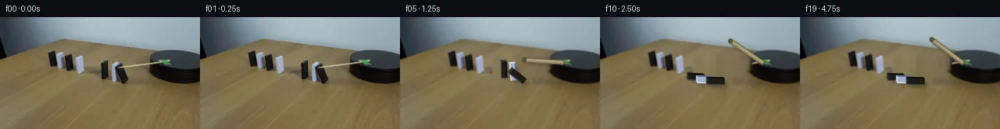

![首帧]()

Round 00
2026-11-04T22:50:18.959303+00:00像素候选变化代码 +291/−0inspection 更新
pixels f55bd9ce98b2d307 · code 2857ef9b6119bfef
查看本轮 generate.py 真实 diff
--- previous/generate.py +++ current/generate.py @@ -0,0 +1,291 @@ +#!/usr/bin/env python3 +"""Generate the 20-frame locked-camera domino continuation. + +The source photograph is retained as the plate. Only pixels hidden by the +moving striker and the three right-row dominoes are reconstructed. Moving +objects are small antialiased, shaded geometric proxies whose colors are +sampled/estimated from the source objects. +""" + +from pathlib import Path +import math + +import cv2 +import numpy as np +from PIL import Image, ImageDraw + +import artifact_io + + +ROOT = Path(__file__).resolve().parent +W, H = 256, 144 +SS = 4 + + +def smoothstep(x): + x = float(np.clip(x, 0.0, 1.0)) + return x * x * (3.0 - 2.0 * x) + + +def alpha_over(rgb, color, alpha): + """Composite a constant RGB color through a float alpha mask.""" + a = np.clip(alpha, 0.0, 1.0)[..., None] + return np.clip(rgb.astype(np.float32) * (1.0 - a) + + np.asarray(color, np.float32) * a, 0, 255).astype(np.uint8) + + +def tabletop_fill(plate, x0, x1, y0, y1, top_y, bottom_y): + """Replace an occluded rectangle by local vertical wood interpolation. + + The low-frequency illumination is taken from clean scanlines immediately + above and below the object corridor. A small, deterministic band-limited + residual avoids an unnaturally flat patch while staying locally colored. + """ + out = plate.copy().astype(np.float32) + xs = np.arange(x0, x1 + 1) + top = plate[top_y, xs].astype(np.float32) + bottom = plate[bottom_y, xs].astype(np.float32) + for y in range(y0, y1 + 1): + q = (y - top_y) / max(1, bottom_y - top_y) + q = np.clip(q, 0.0, 1.0) + row = top * (1.0 - q) + bottom * q + # Fine wood-like variation, under two RGB levels. + grain = (0.9 * np.sin(xs * 0.23 + y * 0.13) + + 0.6 * np.sin(xs * 0.071 - y * 0.31))[:, None] + tint = np.array([1.0, 0.78, 0.42], np.float32)[None, :] + out[y, xs] = np.clip(row + grain * tint, 0, 255) + return out.astype(np.uint8) + + +def build_clean_plate(src): + # Reconstruct the right-row corridor (dominoes plus their cast shadows). + clean = tabletop_fill(src, 118, 169, 50, 90, 47, 93) + # Reconstruct only the tabletop part of the long, camouflaged wooden arm. + # This stops before the black platform/green coupling, preserving the disk. + clean = tabletop_fill(clean, 159, 194, 53, 68, 50, 71) + + # Feather the two rectangular syntheses into the untouched photograph. + mask = np.zeros((H, W), np.uint8) + cv2.rectangle(mask, (118, 50), (169, 90), 255, -1) + cv2.rectangle(mask, (159, 53), (194, 68), 255, -1) + feather = cv2.GaussianBlur(mask, (0, 0), 1.2).astype(np.float32) / 255.0 + mixed = (src.astype(np.float32) * (1.0 - feather[..., None]) + + clean.astype(np.float32) * feather[..., None]) + return np.clip(mixed, 0, 255).astype(np.uint8) + + +def hi_mask_polygon(points, blur=0.0): + m = np.zeros((H * SS, W * SS), np.uint8) + pts = np.round(np.asarray(points, np.float32) * SS).astype(np.int32) + cv2.fillConvexPoly(m, pts, 255, lineType=cv2.LINE_AA) + if blur: + m = cv2.GaussianBlur(m, (0, 0), blur * SS) + return cv2.resize(m, (W, H), interpolation=cv2.INTER_AREA).astype(np.float32) / 255.0 + + +def draw_hi_line(frame, p0, p1, width, colors): + """Draw a subtly beveled wooden striker at supersampled resolution.""" … diff truncated; 204 more lines …